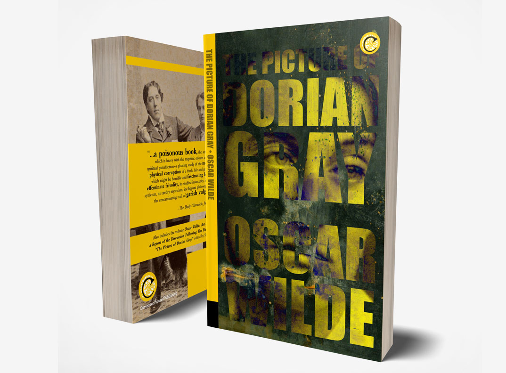
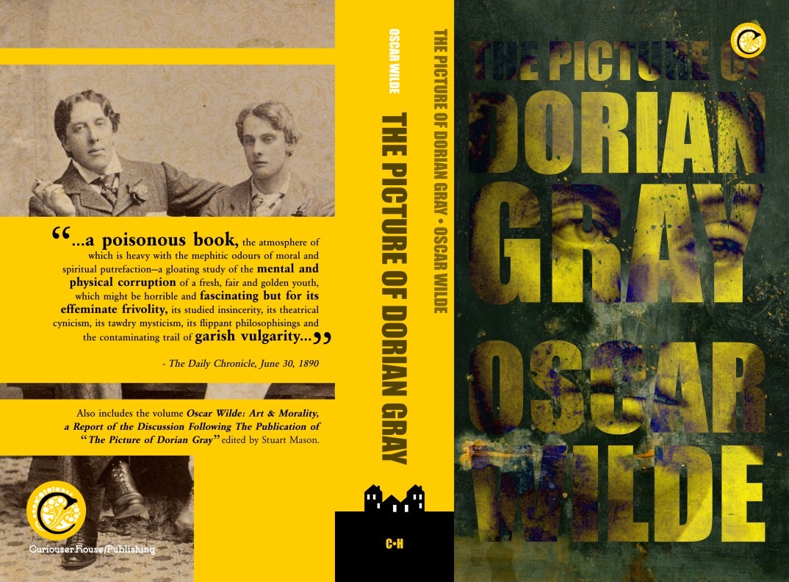

The Picture of Dorian Gray by Oscar Wilde
WHY THIS BOOK
Oscar Wilde's gothic novel is one of my favorites, and indeed, one of my wife's as well. Thus it was too enticing not to tackle immediately. Only later did I think maybe I could have worked up to it once I'd found my groove and worked out all the technical kinks of putting a book together. No matter. I am very proud of this one as it is.

Wilde of course is in top form here, with all the wit and panache he had been known for, but suddenly veering away from the comedies of manner and diving headlong into the gothic. Much musings on art, beauty, morality; all summed up even before the novel begins in his iconic Preface. "All art is quite useless", sayeth Wilde.
How can one not be fascinated with a character like Oscar Wilde?
DESIGN
One silly little thing that eluded me has to do with the covers: It was many months after I had published the book that I had an astounding realization: Wilde and Bosie had not yet met! That's Bosie, or Lord Alfred Douglas, on the front cover, and joining Oscar on the back. Bosie was Oscar's fateful lover and more-than something of a Dorian to his own Lord Wotton. Wilde damn-near manifested Dorian in the form of Bosie, and indeed Bosie remained youthful to Wilde, as he was only barely 30 when Wilde died in November of 1900.
The painting in the background of the front cover is Nocturne in Black and Gold: The Falling Rocket by James McNeil Whistler, who was a personal friend and mentor, fellow wit and dandy.
The use of bright yellow here is a nod to That publication, the "Yellow '90s"...
BONUS EXTRAS! ie SUPPLEMENTARY MATERIAL
Art and Morality...
